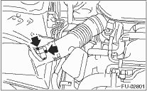
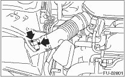

1. Disconnect the ground cable from the battery.

2. Disconnect the connector from the mass air flow and intake air temperature sensor.
3. Remove the mass air flow and intake air temperature sensor.

FUEL INJECTION (FUEL SYSTEMS)(H4DO) > Mass Air Flow and Intake Air Temperature Sensor
1. Disconnect the ground cable from the battery.
2. Disconnect the connector from the mass air flow and intake air temperature sensor.
3. Remove the mass air flow and intake air temperature sensor.
